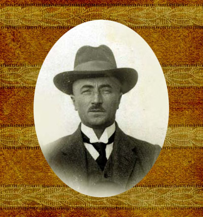
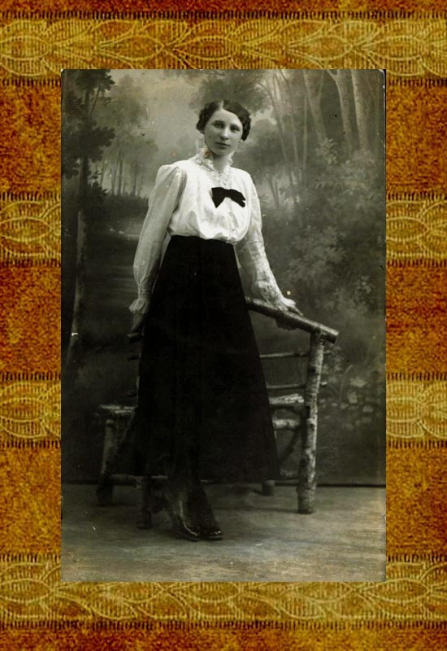
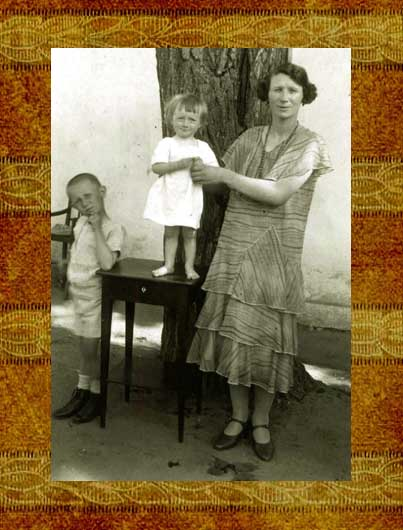
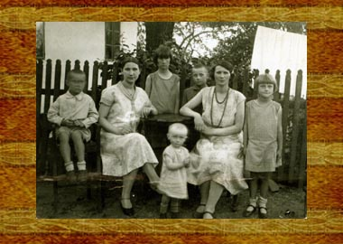
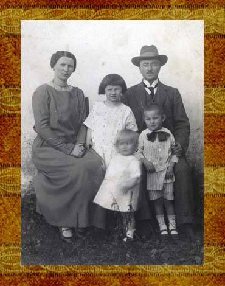
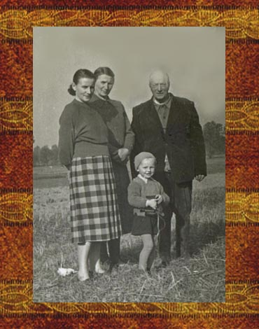
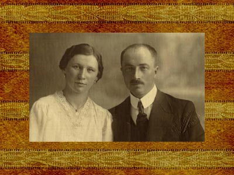
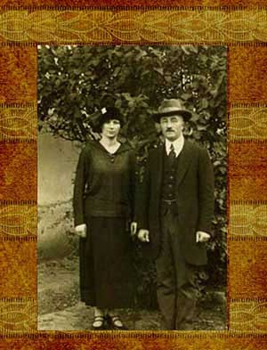

Antoni Sawicki
Maria Lechówna


Od lewej: Stanisław, Helena Lech,
Krystyna, Jerzy, Zdzisław (najmłodszy), Maria, Zofia.
Solec Stary, 1930 rok.

Od lewej: Maria, Krystyna, Antoni, Jerzy, Stanisław.
Zofia, Krystyna i Antoni
Antoni Sawicki urodził się w 13.06.1885 roku w Bejscach. Po ukończeniu miejscowej szkoły powszechnej wyruszył po nauki do Krakowa. Kształcił się w Szkole Rolniczej, którą ukończył w 1908 roku i został specjalistą od technologii żywienia. A ściślej: gorzelnikiem. Podtrzymał w ten sposób tradycję Sawickich z Bejsc - przez lata administrowali oni dworską karczmą, a wyszynk był tam osią interesu.
Dodać trzeba, że w ówczesne dwory utrzymywały się przy życiu głównie z monopolu na produkcję okowity. Destylatornie były w rozkwicie, zatem gorzelnik nie mógł narzekać na brak pracy.
W wieku trzydziestu lat ożenił się z panną Lechówną, jeszcze wtedy niepełnoletnią, jak byśmy dziś powiedzieli. Mimo, iż panna była posażna, a jej rodzice mieli spory majątek, młodzi Sawiccy zmuszeni byli przeprowadzać się z miejsca na miejsce, bo specjalistów takich jak Antoni było niewielu, a zapotrzebowanie na wodę życia ogromne.
Maria i Antoni
Jakiś czas Sawiccy mieszkali w Siedliskach koło Nakła.
Siedliska mają swoją ciekawą historię, o jakiej
poczytacie tutaj. Następnie
przeprowadzili się do Ciemierników, gdzie urodziła się
kolejna córka - Zofia.
Dzieci przybywało, w końcu musiały pójść do szkoły, więc Maria i Antoni osiedli w Kielcach. Byl już wtedy ludźmi zamożnymi. Mieszkali w eleganckim i sporym mieszkaniu, stać ich też było na kształcenie córek i synów. Antoni zaryzykował nawet pewną kwotę i zainwestował ją w spółkę. Wspólnik okazał się jednak nieuczciwy, pieniędzy nie chciał oddać, bo ich już nie miał. Ale Antoni był stanowczy, a według rodzinnej legendy pomagała mu w tym dwururka, i wymusił na oszuście zrzeczenie się kawałka ziemi w Solcu Starym. To Antoniego w pełni zadawalało, gdyż w tejże wsi od lat gospodarowali już teściowie - Teofila i Tomasz Lechowie.
Z ziemią Lechów wiąże się również intrygująca historia. Otóż któregoś dnia, osuszając bagna wchodzące w skład ich ówczesnego gospodarstwa, natknęli się na skrzynię ze skarbami. Co tam było - dziś nie wiadomo, ale musiały to być aktywa znacznej wartości, bo Lech zdołał wykupić kilka okolicznych wsi. Zgromadził w ten sposób ponad 300 hektarów.
Pochodzenie skarbu jest łatwe do wyjaśnienia i dość prawdopodopodobne. W czasie Powstania Styczniowego chłopi łupili co się da, w tym rosyjskie banki. Możliwe zatem, że w skrzyniach utopionych w bagnach znajdowały się właśnie zasoby jakiegoś okolicznego banku. Niestety, z bogactwa pozostało niewiele. Resztówkę zajęła później Zofia z domu Sawicka i jej mąż Jerzy Kowalik. Gospodarowali tam do śmierci.
Kieleckie wygodne życie także okazało się krótkotrwałe. Przyszła wojna, a teren, gdzie stała kamienica Sawickich, przeznaczono pod żydowskie getto. Rodzina zabrała cały dobytek i przeniosła się do Starego Solca, gdzie już mieli swoją zimię i stodołę na niej.
W stodole złożyli mienie, a sami zamieszkali u sąsiadów. Choć było im tam wygodnie, a sąsiedzi otrzymywali za to nielichą zapłatę, Sawiccy zamarzyli o czymś swoim. Mimo wojny zbudowali niewielki dom, ale nie zdążyli przenieść do niego przedmiotów przewiezionych z Kielc, gdyż w czasie przechodzącego obok frontu i toczących się wokół zaciętych walk stodoła spłonęła.
Po wojnie Antoni Sawicki mieszkał jakiś czas w Dobrodzieniu, gdzie pracował w tamtejszej gorzelni. Miał towarzysza o nazwisku Tomasik, nauczyciela matematyki w szkole średniej. Tomasik pochodził z okolicy Solca Starego, byli zatem niemal krajanami. Tenże Tomasik miał stryjecznego brata, jaki kształcił się na lekarza. Antoni pomyślał, że to dobra partia dla jego najstarszej córki Krystyny. Co rychlej wyswatał młodych. Ślub odbył się w Krakowie, o czym tutaj

Ostatnie lata życia Sawiccy spędzili w swoim gospodarstwie w Solcu Starym. Franciszek zmarł 17.09.1961 roku w Solcu Starym, pochowany został na cmentarzu w Szydłowie.